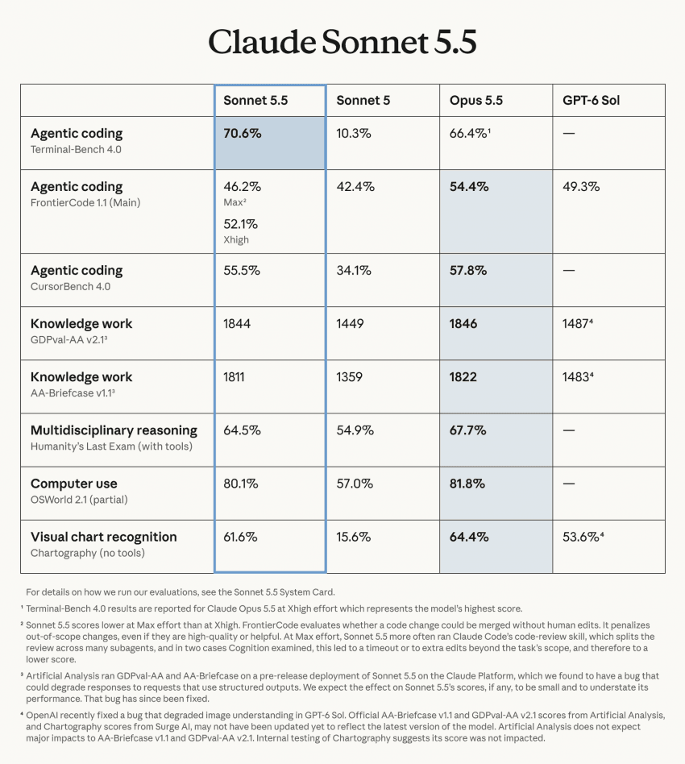

클로드쪽 신모델이 나왔는데 이제 성능도 좋고 가격까지 저렴해지면서
GPT 6 아스트라 쓸 이유가 사라짐

클로드쪽 신모델이 나왔는데 이제 성능도 좋고 가격까지 저렴해지면서
GPT 6 아스트라 쓸 이유가 사라짐
tibo님 !! 리셋을 ... !! 어서 !!
미친 것 같다 ㄷㄷㄷ
토큰 소모량은 얼마나 더 적은 거지?
ㅅㅂ 요새 코덱스 cli로 작업하는데 뭔 지랄을 해놓은건지 실행시키면 창켰다 꺼졌다 반복하고 성능도 별로고 아 진짜 넘어갈까
제미나이 4 나오면 싹 다 버로우 타야 할 애들이 엎치락뒤치락 레슬링하는 게 귀엽구나. 그래 지금을 즐겨라. 제미나이 붐은 온다!!
눅눅한 새우튀김 콘
폭풍전야.
치타는 웃고 있다
아니 아스트라 성능 난리난지 얼마 됐다고 벌써 또 판세가 변했네 ㄷㄷ
AI기업끼리 치킨게임 하는 느낌이네. 누가 살아남을것인가
제미나이 4는 과연 어느정도일까
클로드는 느낌이 개발 원툴같던데 지피티는 걍 전체적으로 무난한 느낌이고
범용성 생각하면 지피티임. 코딩 안할꺼면 굳이
제미나이나 쫌 빨리 공개해서 4.0번대 플래시 쓰고 싶다
지금 옛날 mp3용량 늘어나는 속도를 배속으로 보는느낌. 퍼포먼스가 어떤 수준을 넘어서면 경제성이 더 중요해지는 시점이 올듯
이야....
급이 다른데 아스트라 쓸 이유가 왜사라짐 ㅋㅋ 소넷나왓다고 오푸스 망함?
요즘은 하나 쭉 쓰는거보다 계속 옮겨다니면서 결제해야하는 추세냐?
그래서 월결제만함
gpt 곧 끝나는데 옮겨봐야겠다
개발자 아니면 그냥 범용은 지피티가 낫지않나?
일반인인 나는 봐도 뭔차이인지 모르겠음
걍 친숙한거 공짜루 쓰는거지
뭐 나올때마다 대세 바뀌는 거 존나 웃기긴 함 ㅋㅋㅋ
그냥 이미 만들어진 모델에서 상대방 모델 밴치딸 보고 그것보다 살짝씩 올려서 내놓는 느낌
개소리인게 아스트라는 비교표에도 없고 6솔이랑 비교하고있는데 무슨 아스트라를 이겨
잘못된정보 정정좀
아무거나 써라 어차피 일정 성능이상은 또이또이고 일반 사람들은 실제 ai 능력치 다 끌어다 쓰지도 못함. 프론티어 연구하는 사람이면 모를까
아 뭘또 써야해
지피티 pro 20 + claude pro x5
이게 제일 가성비추천이래
지피티 20 구독을 못하는걸 ㅠㅠ
히히 나는 진작에쓰고있지롱
이제 성능만 좋아지는게 아니라 가성비도 좋아지는구나
오푸스5.5 인줄알고 이게 무슨 속보야 하고 들어왔는데 벌써 소넷5.5네 미친
아스트라 갑자기 뭘 건든건지 토큰은 개처먹는데 좀 맛갔던데
다시 클로드 타임인가
코딩 안하는 사람들도 많이 쓰나?
캐드유저로써 코딩 쥐뿔도 모르지만 캐드 애드온(리습) 만들어 쓰고있음
리습 추천좀 리습 쓰는건 몇가지 쓰는데 그것도 가끔이고, 손에 잘안익네
리습 어떤식으로 써?
제일 유용하게 스는 리습 기능 2가지 정도 알려줄수 있어?
난 건축 분야라서 캐드파워라고 오토캐드에 설치해서 같이 쓰고있는데. 이게 보통 리습 덩어리 기능이고..
리습은 자기가 어떤 분야를 쓰느냐에 따라 달라지다보니..
사용하다가 불편한부분 개선하고 싶은점을 말하는게 가장 빠를거 같은데?
코딩 ㅈ도 모르고 하나도 안하는데
맨날 다섯시간 리미트 풀로 채워서씀
법무쪽 일함
사무직하는사람이면 무조건 다 써야지
제미나이는 웃고있다..
지피티6나왓을때만해도 agi니 뭐니햇는데 그 호들갑 3개월도 못가서 클로드 중간모델한테 따엿네
표는 솔인디
소넷은 솔이랑 비교하는게 맞음
페이블 오퍼스가 아스트라랑 토큰 소모량이 비슷하고
하이쿠가 루나랑 비슷함
진짜 제미니는 얼마나 대단하게 내놓을라고 짚이랑 클로드 독주하는데 플래시만 딸깍하면서 존버하는거냐 ㅋㅋ
ㅇㅇ 개소리 ㅋㅋ
매번 버전나올때마다 멸망 한다는 소리 시즌 2354호 ㅋㅋ
10월 되면 갈아탈 것
초기화줘 응애
뭐가됐던 잘되라
수학 과학쪽이나 더 꼼꼼한건 gpt쪽임 결과물도 보면 미감은 떨어져도 기능은 잘만듬 근데 문제는 가격임 반값도 안되는걸로 비비는게 미쳐서 가성비1황임
와우